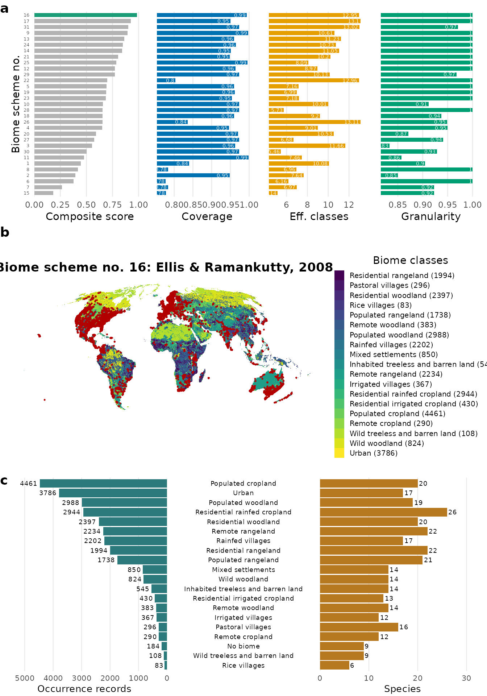
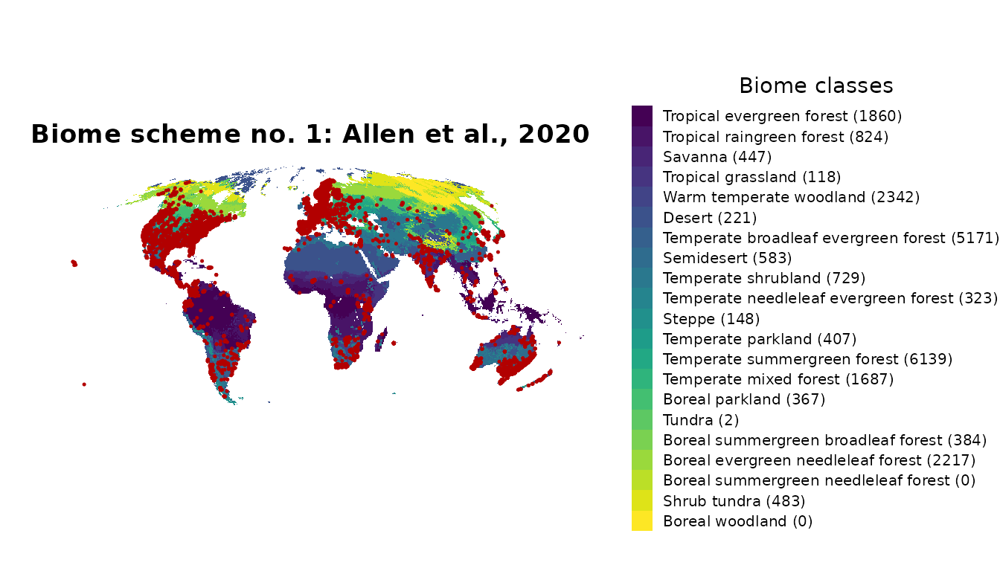

Step 4: Output and visualisation
Source:vignettes/step4-output-and-visualisation.Rmd
step4-output-and-visualisation.RmdGoal
The records were assigned to biome classes in Step 3. This
final step summarises the result per biome class with
biomes_tab() and visualises the whole
workflow with biomes_visualise().
1. Tabulate records per biome class
biomes_tab() counts occurrence records
(one input row = one record) per biome class and scheme, returning a
long table with one row per (scheme, biome class) pair:
classified <- biomes_classify(biomes_example, scheme = 1)
#> Coordinates provided as data.frame, assuming WGS84 as CRS.
#> Classified 29104 record(s) against 1 biome layer(s):
#> - Biome_Inventory_layer_01 (Allen et al., 2020)
biomes_tab(classified)
#> scheme biome n
#> 1 Biome_Inventory_layer_01 Boreal evergreen needleleaf forest 2217
#> 2 Biome_Inventory_layer_01 Boreal parkland 367
#> 3 Biome_Inventory_layer_01 Boreal summergreen broadleaf forest 384
#> 4 Biome_Inventory_layer_01 Desert 221
#> 5 Biome_Inventory_layer_01 no_biome 4652
#> 6 Biome_Inventory_layer_01 Savanna 447
#> 7 Biome_Inventory_layer_01 Semidesert 583
#> 8 Biome_Inventory_layer_01 Shrub tundra 483
#> 9 Biome_Inventory_layer_01 Steppe 148
#> 10 Biome_Inventory_layer_01 Temperate broadleaf evergreen forest 5171
#> 11 Biome_Inventory_layer_01 Temperate mixed forest 1687
#> 12 Biome_Inventory_layer_01 Temperate needleleaf evergreen forest 323
#> 13 Biome_Inventory_layer_01 Temperate parkland 407
#> 14 Biome_Inventory_layer_01 Temperate shrubland 729
#> 15 Biome_Inventory_layer_01 Temperate summergreen forest 6139
#> 16 Biome_Inventory_layer_01 Tropical evergreen forest 1860
#> 17 Biome_Inventory_layer_01 Tropical grassland 118
#> 18 Biome_Inventory_layer_01 Tropical raingreen forest 824
#> 19 Biome_Inventory_layer_01 Tundra 2
#> 20 Biome_Inventory_layer_01 Warm temperate woodland 2342The returned columns are scheme, biome and
n. To count unique species per biome class
instead of records, deduplicate by species first:
library(dplyr)
#>
#> Attaching package: 'dplyr'
#> The following objects are masked from 'package:terra':
#>
#> intersect, union
#> The following objects are masked from 'package:stats':
#>
#> filter, lag
#> The following objects are masked from 'package:base':
#>
#> intersect, setdiff, setequal, union
classified |>
distinct(species, Biome_Inventory_layer_01_name) |>
biomes_tab()
#> scheme biome n
#> 1 Biome_Inventory_layer_01 Boreal evergreen needleleaf forest 7
#> 2 Biome_Inventory_layer_01 Boreal parkland 11
#> 3 Biome_Inventory_layer_01 Boreal summergreen broadleaf forest 5
#> 4 Biome_Inventory_layer_01 Desert 10
#> 5 Biome_Inventory_layer_01 no_biome 13
#> 6 Biome_Inventory_layer_01 Savanna 17
#> 7 Biome_Inventory_layer_01 Semidesert 12
#> 8 Biome_Inventory_layer_01 Shrub tundra 5
#> 9 Biome_Inventory_layer_01 Steppe 11
#> 10 Biome_Inventory_layer_01 Temperate broadleaf evergreen forest 25
#> 11 Biome_Inventory_layer_01 Temperate mixed forest 10
#> 12 Biome_Inventory_layer_01 Temperate needleleaf evergreen forest 9
#> 13 Biome_Inventory_layer_01 Temperate parkland 7
#> 14 Biome_Inventory_layer_01 Temperate shrubland 18
#> 15 Biome_Inventory_layer_01 Temperate summergreen forest 10
#> 16 Biome_Inventory_layer_01 Tropical evergreen forest 20
#> 17 Biome_Inventory_layer_01 Tropical grassland 11
#> 18 Biome_Inventory_layer_01 Tropical raingreen forest 22
#> 19 Biome_Inventory_layer_01 Tundra 1
#> 20 Biome_Inventory_layer_01 Warm temperate woodland 142. Visualise the workflow
biomes_visualise() draws up to three panels for a set of
occurrence records:
- rank: the ranking of the biome schemes (best highlighted);
- map: the occurrence records (red points) over the chosen scheme, with the number of records per biome class appended to the legend labels;
- barplot: the number of records and species per biome class.
By default all three are drawn and lettered a, b, c.
If scheme is NULL, the best-fitting scheme is
chosen by biomes_rank() (within
scheme_type).
biomes_visualise(biomes_example) # rank + map + barplot
#> <SpatRaster> resampled to 5e+05 cells.
Select individual panels with panels; the panel letters
adjust to the selection (e.g. panels = c("map", "barplot")
labels them a and b):
# just the map, for a fixed scheme
biomes_visualise(biomes_example, scheme = 1, panels = "map")
#> <SpatRaster> resampled to 5e+05 cells.
The red points are the occurrence records you
supplied. Drop the record counts from the legend labels with
legend_counts = FALSE, or the whole colour legend with
legend = FALSE. Save any panel with
ggplot2::ggsave():
p <- biomes_visualise(biomes_example, scheme = 1, panels = "map", legend = FALSE)
ggplot2::ggsave("biome_map.jpg", p, width = 13, height = 8, dpi = 600)The whole workflow in one call
Steps 1-4 are wrapped by biomes_full(), which by default
ranks across all 31 schemes and uses the best one. No figure is drawn by
default (plot = "none", the fastest option).
plot = "all" returns the combined lettered
figure in res$plot:
res <- biomes_full(x = biomes_example, plot = "all") # scheme = "best"
res$scheme # the chosen biome scheme number
res$table # records per biome class
res$plot # the combined figure (rank + map + barplot)A subset of c("rank", "map", "barplot") returns the
panels individually (no panel letters), each in its own
component res$rank, res$map,
res$barplot:
res <- biomes_full(x = biomes_example, plot = c("rank", "map", "barplot"))
res$map # just the map panel, on its own
res$barplot # just the barplot panelTo force a specific scheme, pass its number
(scheme = 1); to rank within one group, pass a scheme type
(scheme = "vegetation"). Reach for the individual functions
when you want to tweak a step; use biomes_full() when you
want the standard pipeline in one call.
Done
That completes the four-step workflow: assemble → choose a scheme → classify → output and visualise. Back to Step 1.